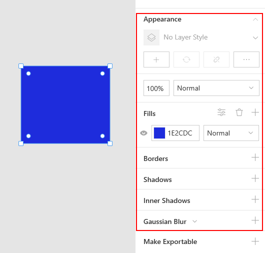
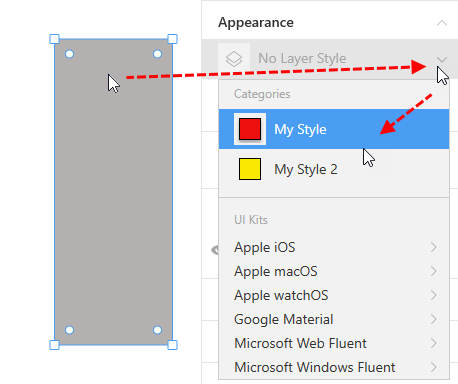
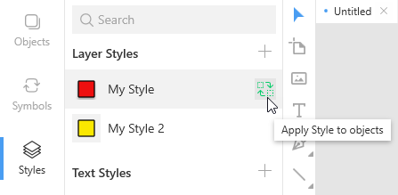
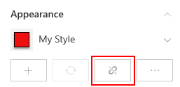
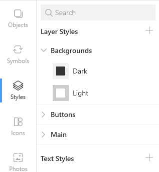
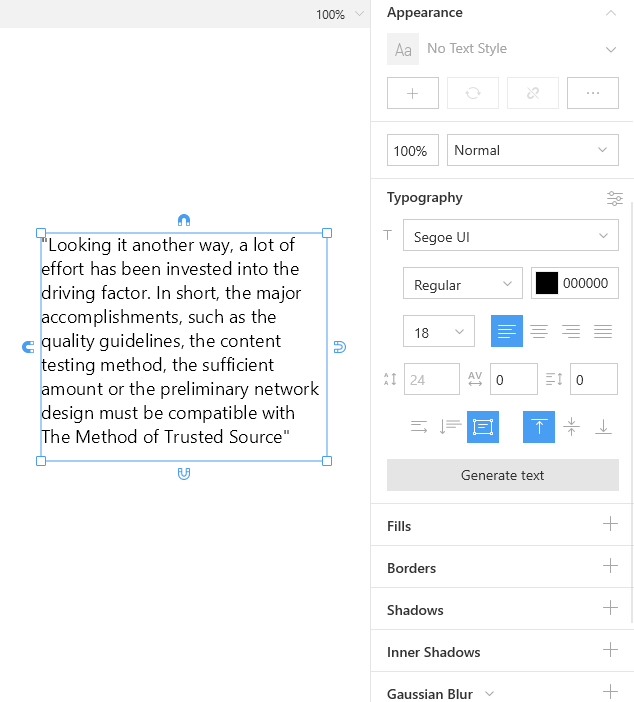

Learn how to speed up your work with layer and text styles
Layer and text styles are predefined sets of layer and text properties that you can reuse in your designs. With the help of styles you can dramatically save your time and make your designs look more professional and consistent. When you modify a style, Lunacy immediately applies them to all the layers using this style.
You will store your custom layer and text styles on the Styles tab.
Layer style properties include:
They appear in the Inspector when you select a layer.
There are two ways of adding layer styles.
Way 1. By clicking the plus icon in the left panel and defining all the required properties in the Inspector.
Way 2. By first defining the properties of a layer and then saving them as a style.
Click the required layer and select the style you want to apply to it from the menu in the Inspector.
Optionally, after selecting the layer you can click the required style in the left panel and then click the replacement icon as shown below.
You can also apply a style to multiple selected layer at a time (see the demo below).
There are two ways to modify a style.
Way 1.
Way 2.
Select the required layer and click the Detach style button shown below.
The appearance of the layer remains the same, but it is no longer associated with the style and further changes to the style will not affect the layer.
It is a good practice to organize styles into categories similar to those shown in the figure below.
To divide your styles into categories, consider the following format of style names:
Category name / Subcategory name / Style name
For example, to organize your styles of backgrounds, you can give them the following names:
You don't need to manually create categories and subcategories. Lunacy will show them automatically based on style names. The number of nesting levels for subcategories is not limited.
To rename a style:
F2, if you prefer shortcuts.
Enter.To rename a style category, right-click the category you want to rename and select the respective command on the displayed menu.
Style categories and styles appear in the A-Z order in the left panel.
To unfold/fold the content of all style categories, right-click anywhere over the category list and select Expand All/Collapse All on the displayed menu.
You can duplicate your existing styles and quickly create new ones based on their parents.
To duplicate a style:
Ctrl + D.OR
Also, you can select and duplicate several styles at a time.
To copy styles between documents:
Ctrl or Shift to select multiple items).
To delete a style:
Delete.OR
Delete on the displayed menu.To delete a style category, right-click the category you want to delete and select the respective command on the displayed menu.
Also, you can select and delete several styles at a time.
All newly created documents have a color palette which includes document color variables for main, accent, background, and text colors. Deselect all layers to see the palette in the right panel and press to generate a new palette.
To change palette colors manually, click on the color circles to open the color picker.
If you want the default shape color to be the usual gray, delete all color variables by pressing.
Using the document color palette, Lunacy applies color to shapes automatically depending on their size and predicted purpose. Larger shapes have background colors while smaller elements are assigned primary or accent colors.
The only difference between text styles and layer styles is that in addition to such properties as fills, shadows and blurs, text styles also feature a set of typography properties that include font size, font family, line spacing and others. All the procedures with text styles are the same as in layer styles.
You can make use of layer and text styles from UI kits supplied with Lunacy or your own files. In the latter case you should first add this file to the UI Kits library. For details about UI kits, click here.
To apply an external style to a layer:
You cannot make changes to external styles, but you can use the Unlink from Library feature. This feature will add a copy of the style you need to your document assets, i.e. to the list of your layer or text styles. After that, you can do whatever you want with the unlinked style as with any other style within your document.
There are two ways to unlink styles:
Way 1. Select a layer with the style you want to unlink, then click Unlink from Library in the Inspector.
Way 2. Select a style or several styles in a UI kit, then right-click and select Unlink from Library on the context menu.
The demo below shows both these methods.